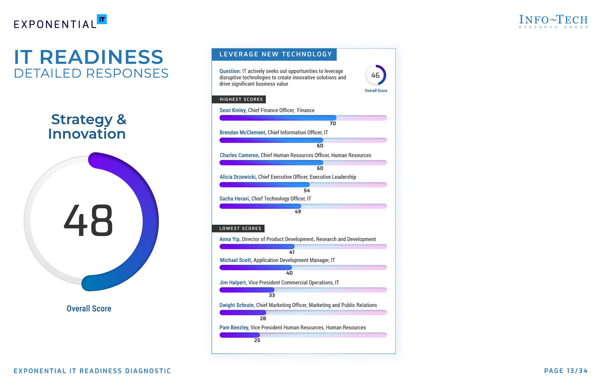

Diagnostic Reports
Report designs that turn diagnostic survey results into clear findings IT leaders can act on.
- Company
- Info-Tech Research Group
- Timeline
- YEAR
- Tools
- TOOLS
- Format
- Multi-page reports
About this work
What Info-Tech diagnostics are: who takes them, what the report tells them, and how it's used.
My role and process: what you designed (layouts, charts, templates), who you worked with, and key decisions.
Selected reports
Exponential IT Readiness Diagnostic
A report comparing how ready the organization is for technology-driven transformation with how ready IT is to lead it, scored across core IT domains.
I designed the complete report and was partway through coding it when the project was cancelled, so this design was never published. Shown with sample data.


Each IT domain gets a page: an overall score up front, then every stakeholder's response.

Highest and lowest scores are split so disagreement between leaders stands out.
REPORT 2 NAME
What this diagnostic measures and who reads the report.
REPORT 3 NAME
What this diagnostic measures and who reads the report.
Created for Info-Tech Research Group. Shown with sample data.